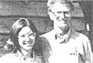

PHOTOS BY NORM LEE AND MOTHER'S STAFF
[1.] As these students at the Good Life Get-Together found out by experience, if you want a pole barn, first you've got to put up some poles! [2]. John Vivian's stone wall-building workshop puts the top on a mortarless outdoor tableldesk. [3]. John Rexelman gives fruit tree students some pruning tips. [4]. Wind power expert Carl Tourtellotte demonstrates that assembling your own powerplant is an elevating undertaking. [5]. One of the nice features of the festival is that participants ? such as this chain saw instructor ? give mini-workshops of their own!